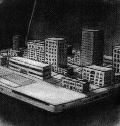

Workplace is Mediaspace is Cityscape:
Nick Montfort on Book and Volume
by Jeremy Douglass
alternate format- interview .pdf
Nick Montfort is a poet and computer scientist who lives in Philadelphia. He wrote Twisty Little Passages: An Approach to Interactive Fiction(MIT Press, 2003), co-edited The New Media Reader (MIT Press, 2003), and collaborated on several literary projects, including The Ed Report, 2002, Implementation, and Mystery House Taken Over. His interactive fiction includes Winchester's Nightmare (1999) and Ad Verbum (2000). His website: <http://nickm.com/>.
Jeremy Douglass: With its open city map and constant hum of background activity, Book and Volume is strikingly different from your earlier interactive fiction. Ad Verbum, for example, was set in a confined space that was crammed with challenges. How do setting and design relate in your work?
Nick Montfort: In Ad Verbum, the interaction with puzzles was what was interesting about the game--not anything about the nature of the Wizard of Wordplay's mansion. My interest was in connecting the particular ways in which people could solve puzzles with a particular potential literary tradition--these techniques that come from the Oulipo and that were pioneered and promoted by that group in the 20th century.
Book and Volume is about exploration, experience, conspiracy, and questions of "what's going on?" People who sign non-disclosure agreements and talk with other people who have signed non-disclosure agreements are all familiar with not being able to know what your colleagues and friends are doing. That aspect of experience, how it can be unlocked, and if it can be unlocked, is part of what is going on in Book and Volume. There is not the same attempt, as in Ad Verbum, to create a new genre of puzzle or to innovate in how puzzles are created.
JD: Book and Volume takes place in the city of nTopia, a rigorously planned community with a grid-system of city streets that one can wander at will. What sort of readings does this unconstrained space accommodate?
NM: There are ways in which the space is constrained. For instance, you begin to wander around the city on Sunday night after 9pm, and so you can go to different areas outside but almost everything is closed. If you want to take some sort of breadth first approach and explore everything one intersection at a time, you have to wait until the stores open the next morning.
The idea of the grid system is one of the things that the experience of Book and Volume is about. It is a system that seems very good from the standpoint of some type of city planner, and has its advantages in terms of locating things, but that is only effective after the human beings who are running around the city have become acclimated to it to some extent. It is not something that is natural, like a landmark-based type of system.
I did write Winchester's Nightmarewith landmarks organized in a loop, off of which one can go to different areas. You don't actually have to use compass directions at all to move around. Book and Volume is perhaps more conventional in terms of interactive fiction mapping and layout.
JD: One convention in interactive fiction that has perhaps become less common in recent years is the "timed puzzle," which might simply mean that the protagonist collapses from hunger or exhaustion after a certain period of time without food or sleep. How does dealing with this experience of time help to structure Book and Volume?
NM: When you are in a city where you have an apartment and where there are restaurants all around, hunger and sleep make for a little bit different of a situation than if you've just, say, had a planetfall on Resida [the setting of Steven Meretzky's Planetfall] and you are in a survival situation.
A lot of what goes on in Book and Volume is organized around what I think of as 'tasks' rather than 'puzzles'--the way that for instance in A Mind Forever Voyaging you were told "go and read a newspaper, go see a movie, go to a restaurant, talk to a government official." Things like this weren't really challenging to do, because if you wandered around you would notice places to do them, but they gave you a reason to wander around and look and experience things.
JD: A constant experience in Book and Volume is the crowd of passers-by--people quite specific to the nTopia landscape, who are racing around on Segways, or loudly dictating code into cell-phone headsets... what inspired this approach of using background effects to establishing setting?
NM: My main influence in adding those type of effects is from Robert Pinsky, from Mindwheel. Actually, there are two different types of effects. Pinsky distinguishes between effects that are tied to mood and tension, he calls these 'weather,' and more general things that go on all the time, called 'drivel.' There are effects of both sorts in Book and Volume.
One of the things that encourages me to finish Book and Volume is when I go to places and I see that something very absurd, something I had made up and put in Book and Volume,; actually exists now. So, I was in San Antonio recently and there was a Segway store ... there it was. It was called "SegCity," and it was right near the riverwalk, by the Hyatt. In Philadelphia near the main post office I spotted seven people on Segways in a group--I guess postal workers who were training. And this again seemed like something right out of Book and Volume.
These things are sort of irrelevant to you as a human being in an ontological world, but nevertheless are going on all around you in the city, and reminding you of the existence of city life. So, in addition to there being a literary purpose for wanting these amusing texts to appear once in a while, there is also a connection to the atmosphere and experience of a city.
JD: In addition to the realism of city atmosphere, a Book and Volume interactor is immediately confronted with some uncanny moments, such as apparitions of Carrie Fisher or Leonard Nimoy flickering in and out of view.
NM: I think celebrity placement is also part of what's taken up there--and geek chic. The characters you see appearing are all the sorts of people who might be revered by geekdom. Certainly media and simulation overall are very interesting to me. Music as well as television film and visual art are all part of what is taken up in Book and Volume.
One overall issue is a question of how digital technology at a corporate and everyday level has its convergence with media. Of course, this being the nWare media campus, the media division of a computer company, this issue is foregrounded.
JD: The geography of nTopia also naturalizes the limits of the space. Coming to the cliff railing that looks off the edge of the mesa, I realized that I was in a town as isolated as a Road Runner cartoon set. Did you use the landscape to avoid the "you can't go there" messages that delimit most interactive fiction experiences?
NM: Sure, there is always the desire of the interactor to explore, to move further. Naturally you want to see "where is the boundary?" "how can I go as far as possible?" and this has been dealt with in different ways in the past. A Mind Forever Voyaging just said something like "End of simulation: simulation boundary reached" if you tried to go under the highway and leave Rockvil. Savoir-Faire will say something like "It's not time to give up yet," so you need to keep looking through the house. Bad Machine has a different idea in which the bounded nature of the space is important, it's part of the point, and escape is a possibility and provides an ending.
One of the many interesting things that Bad Machine reminds me of is the nature of the workplace as a closed system. In Book and Volume you are a system administrator who wanders around in this city and has duties throughout in different areas where there are computers--and yet you can't leave the workplace, you really have to stay there, it just happens to be that the whole city is the workplace.
I tried to take the necessary limitation of a bounded, simulated space, and make that into something that was meaningful in the context of work, of America, of computing, and so on. Of course, I could have just put the typical endless desert such as you see in Infidel around nTopia, and let interactors walk to their deaths into the desert, but that doesn't seem suitable.
JD: Who do you see as the audience for Book and Volume?
NM: At a high level, certainly, my hope is that Book and Volume will be enjoyed by the interactive fiction community, as has been the case in the past with Ad Verbum, and that it is something that the electronic literature community will appreciate and engage with as well.
On one hand, Book and Volume is not meant to be as puzzley and difficult as Ad Verbum. On the other hand, one of the important distinctions from the less puzzle-laden Winchester's Nightmare is that Book and Volume is funny, or at least I hope it is funny. This is something that I hope makes the experience motivating, and makes people want to interact further, read on, and experience more of the city that's there and the events that transpire. It is not meant to be funny in a meaningless way--it is meant to connect with modern experiences, and it is meant to have the sort of relationship that my poetry and that other people's literary writing has with the world that we live in, to engage perspectives on the world.
JD: Our perspective on the world entering Book and Volume is through the main character--and interacting in the role of this person gives us a very specific relationship to the world of nTopia.
NM: The player character in Book and Volume is a system administrator, someone who has a job that is in information technology and computing, but it is a very menial job, getting instructions on what to do, and, you know, going and pushing some buttons. That's funny, in a certain sense, because that's a lot of what people do when they maintain computers.
But it is also shows this sort of perspective in a way that, at the same time that it makes fun of this system administrator figure, is meant to be sympathetic to the plight of this particular person's job, this particular person's place in a manufactured and prefabricated society, their seeming absence of personal history, and so on. Besides being funny, it is meant to bring into perspective a more complex experience of information society, computing culture, and modern day America.
JD: Looking through the front matter for Book and Volume, I noticed that, rather than including a boilerplate help document, you've written your own orientation essay, introducing new readers to interactive fiction and helping to set their expectations of what the parser could and could not do. Among IF authors, this kind of preface is almost its own genre....
NM: The "introduction to Interactive Fiction" genre? Sure, why not.
Book and Volume is definitely for interactive fiction enthusiasts, and electronic literature readers. Only those electronic literature readers who are willing to type things into a computer program--as is needed with IF--are going to be willing to deal with it, and come to understand the conventions of how one interacts.
This introductory essay about how to interact with interactive fiction comes from discussions with people in the e-lit community and from looking at what common misconceptions people have about appropriate input. But only people who are willing to put in some effort to figure out this mode of interaction are going to get something out of Book and Volume.
JD: Do you see this as being an issue of literacy in the medium?
NM: Well, literacy or level of interest. I think someone who comes with the expectation that this is the same thing as a Flash animation or the same thing as clicking on a poem that is presented in HTML--from the standpoint of what the interactor is called upon to do--is going to be very surprised. Not everyone will be interested in interactive fiction, just as not everyone will be interested in poetry. But those who are willing to take a look deserve an explanation; they should know something about how to operate interactive fiction.
A typical example of not knowing how to operate the program is what happened with Winchester's Nightmare, something I saw myself probably half a dozen times before I eventually coded a reply to this for a later release. I would show Winchester's Nightmare to people, and then, when the prompt [an incomplete sentence] came up, they would just press enter! Then they would say "Well where's the text--I want more text now--what's going on? I'm pressing enter, nothing's happening."
So the expectation was "text is coming out on the screen, I need to press space or enter or something and I'll get more." But no, actually, you're required to complete the sentence in the case of Winchester's Nightmare, or type at the prompt what it is that you instruct a character to do. Only if you do that will your character do something in response and will there be any change in the state of the world, generating something else so that new text will be shown to you.
Part of my writing this introduction is to explain this entire context, which is not obvious to someone. It is no more obvious than it is to people who haven't experienced the web if you stick them in front of a computer and say "okay here you go--here's CNN.com." There is no reason to expect them to start grabbing the mouse to start clicking on things or whatever else they are expected to do to interact.
Ultimately the reason that I encourage people to play interactive fiction with others and to be introduced through other people to interactive fiction is that's the way a lot of people learn. I didn't figure out how to interact with a computer to begin with entirely independently on my own, having no contact with others. So my attempt to explain interactive fiction is there in prose, but after someone reads this it does make a difference to have someone as a guide. I feel it is important to encourage people to play together, and to see that as a valid way to experience interactive fiction.
Interactive Fiction Discussed in the Interview
Meretzky, Steven. Planetfall. Infocom, ZIL/Z-Machine, 1983.
Meretzky, Steven. A Mind Forever Voyaging. Infocom, ZIL/Z-Machine, 1985.
Montfort, Nick. Ad Verbum. 2000.
Montfort, Nick. Winchester's Nightmare. 1999.
Pinsky, Robert. With Steve Hales, programmer and William Mataga,programmer. Mindwheel. Synapse/Broderbund, BTZ, 1984.
Shiovitz, Dan. Bad Machine. TADS 2, 1998.
Short, Emily. Savoir-Faire. Inform/Z-Machine, 2002.
|